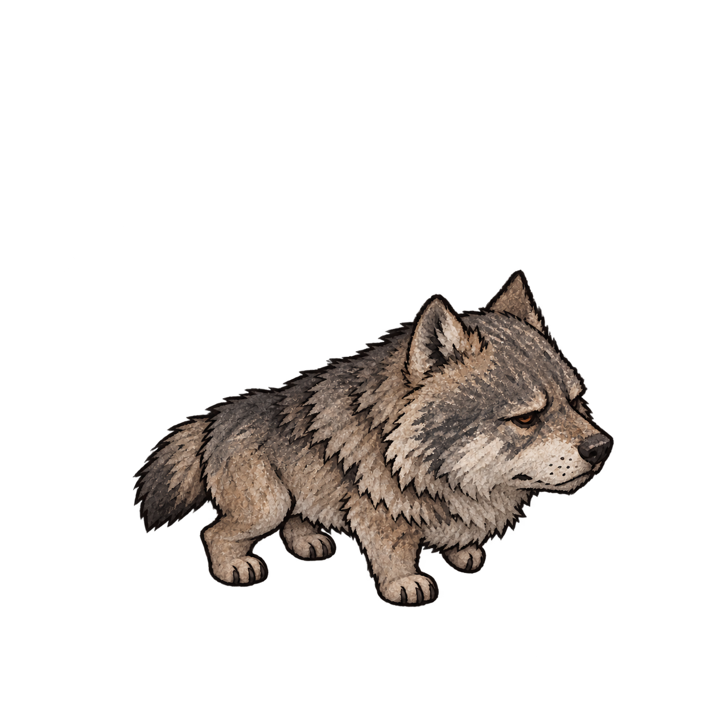
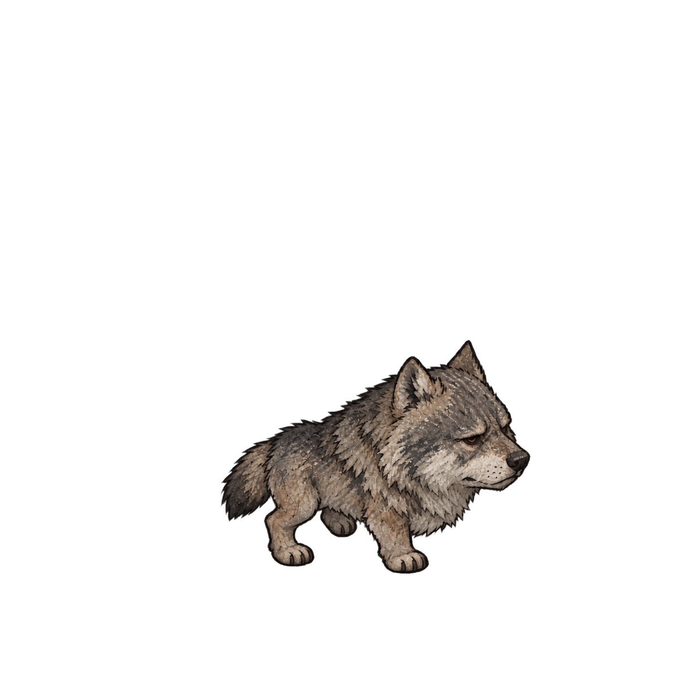

Wolf: twelve new drawings for one second of walking
12distinct poses planned
2drawing trials held back
0accepted replacement frames
The replacement walk is not ready. The lab still displays the rejected eight-frame study. Its speed-up was undone; the new sheet must add drawings while keeping the original one-second cycle and movement speed.
Grok's continuous-motion tool returned: “Video generation tools are unavailable under zero data retention (ZDR).” Generation awaits a decision to connect private output storage or approve a temporary privacy-setting change. No video or extracted frames were produced.
New pose guides
These twelve stick figures define the intended movement, in order. Each paw has four swing poses. Contact calculations, joint reach and the loop join pass in the plan. These are guides for drawing, not finished wolf sprites.
Two drawing trials — held back, not ready for playback


Remaining work
- Resolve Grok's output-storage/privacy setting.
- Generate and inspect a coherent full-body walk.
- Extract twelve distinct useful frames, measure the painted feet and check every transition and the loop join.
- Load the verified replacement into the existing motion lab.